真核细胞核内发生在 DNA 上的所有动态过程，都处于由核小体及其修饰、转录因子和染色质相关复合物所构成的染色质环境中。各种染色质特征标记着激活性和抑制性转录调控元件以及染色质结构域，这些特征因细胞类型而异，并在发育过程中发生变化。
传统上，染色质特征的全基因组定位一直使用染色质免疫沉淀（ChIP）来完成：将染色质交联并溶解，再用针对目标蛋白或修饰的抗体去免疫沉淀结合的 DNA（图 1a）。自 35 年前首次报道以来，ChIP 最常见的操作方式几乎没有改变，并且仍然饱受信噪比问题和假象的困扰。另一种染色质分析策略是原位酶锚定（enzyme tethering in situ）：由抗体或融合蛋白靶向目标染色质蛋白或修饰，随后标记或切割其下方的 DNA。过去二十年间，一系列酶锚定方法相继问世。CUT&Tag（Cleavage Under Targets & Tagmentation，靶下切割与片段化）是一种使用蛋白 A-Tn5（pA-Tn5）转座酶融合蛋白的锚定方法（图 1b）。在 CUT&Tag 中，将通透化处理的细胞或细胞核与针对特定染色质蛋白的抗体孵育，随后将装载了 mosaic-end 接头的 pA-Tn5 依次锚定到抗体结合位点。加入镁离子激活转座酶后，接头被整合到附近的 DNA 中，再经扩增生成测序文库。由于 pA-Tn5 锚定后对样品进行严格洗涤，加上接头整合的高效性，抗体锚定 Tn5 类方法获得了很高的灵敏度。相对于 ChIP-seq 改善的信噪比，意味着定位染色质特征所需的测序量减少了一个数量级，从而可以通过对文库进行条形码 PCR，将多个样品（通常最多 90 个）混合后在 Illumina NGS 测序仪上进行双端测序。
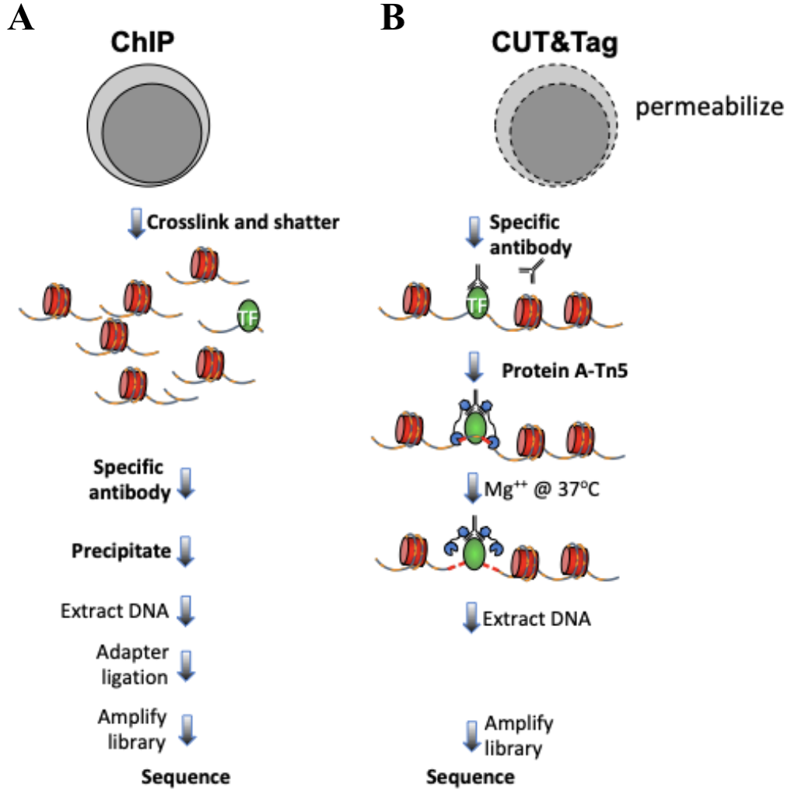
图 1. 免疫沉淀与抗体靶向染色质分析策略的区别。A. ChIP-seq 实验流程。B. CUT&Tag 实验流程。细胞和细胞核以灰色表示，染色质为红色核小体，特定染色质蛋白为绿色。
本教程用于处理和分析遵循 Bench top CUT&Tag V.3 方案得到的 CUT&Tag 数据。教程所用示例数据是人淋巴瘤 K562 细胞系中组蛋白修饰的分析，但本教程普遍适用于任何染色质蛋白，包括转录因子、RNA 聚合酶 II 和表位标签蛋白等。

图 2. CUT&Tag 数据处理与分析流程。
library(dplyr)
library(stringr)
library(ggplot2)
library(viridis)
library(GenomicRanges)
library(chromVAR) ## 用于 FRiP 分析和差异分析
library(DESeq2) ## 用于差异分析部分
library(ggpubr) ## 用于自定义图形
library(corrplot) ## 用于相关性图本教程使用来自 Kaya-Okur et al. (2020) 的数据，可从 GEO 下载。相应的 SRA 条目如下所示。
从 GEO 下载 SRA 序列的选项：
首先，我们需要指定项目路径。
##== linux command ==##
projPath="/path/to/project/where/data/and/results/are/saved"以 SH_Hs_IgG_20181224 为例：
##== linux command ==##
wget -O $projPath/data/IgG_rep2/IgG_rep2_R1_001.fastq.gz ftp://ftp.sra.ebi.ac.uk/vol1/fastq/SRR875/001/SRR8754611/SRR8754611_1.fastq.gz
wget -O $projPath/data/IgG_rep2/IgG_rep2_R2_001.fastq.gz ftp://ftp.sra.ebi.ac.uk/vol1/fastq/SRR875/001/SRR8754611/SRR8754611_2.fastq.gz
wget -O $projPath/data/IgG_rep2/IgG_rep2_R1_002.fastq.gz ftp://ftp.sra.ebi.ac.uk/vol1/fastq/SRR875/002/SRR8754612/SRR8754612_1.fastq.gz
wget -O $projPath/data/IgG_rep2/IgG_rep2_R2_002.fastq.gz ftp://ftp.sra.ebi.ac.uk/vol1/fastq/SRR875/002/SRR8754612/SRR8754612_2.fastq.gz此步骤并非必需。如果用户是自己产生的数据，且 FastQC 是其课题组常规检查流程之一，我们在此提供该步骤作为排障说明。
##== linux command ==##
mkdir -p $projPath/tools
wget -P $projPath/tools https://www.bioinformatics.babraham.ac.uk/projects/fastqc/fastqc_v0.11.9.zip
cd $projPath/tools
unzip fastqc_v0.11.9.zip##== linux command ==##
mkdir -p ${projPath}/fastqFileQC/${histName}
$projPath/tools/FastQC/fastqc -o ${projPath}/fastqFileQC/${histName} -f fastq ${projPath}/fastq/${histName}_R1.fastq.gz
$projPath/tools/FastQC/fastqc -o ${projPath}/fastqFileQC/${histName} -f fastq ${projPath}/fastq/${histName}_R2.fastq.gz质量检查参考：https://www.bioinformatics.babraham.ac.uk/projects/fastqc/bad_sequence_fastqc.html
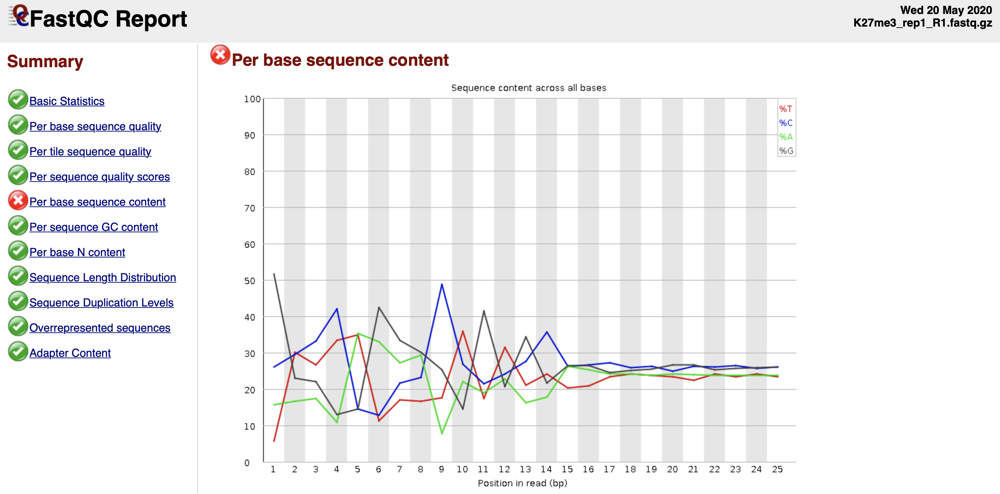
图 3. 每条碱基的序列组成（Per base sequence content）未通过 FastQC 质量检查。
读段开头的序列组成不一致是 CUT&Tag 读段的常见现象。「Per base sequence content」检查未通过并不意味着你的数据有问题。
有时，为提高效率，样品常被分到多个泳道（lane）上测序，可在比对前合并。如果你想检查同一样品不同泳道测序之间的可重复性，可以跳过此步骤，分别比对每个测序文件（fastq 文件）。
##== linux command ==##
histName="K27me3_rep1"
mkdir -p ${projPath}/fastq
cat ${projPath}/data/${histName}/*_R1_*.fastq.gz >${projPath}/fastq/${histName}_R1.fastq.gz
cat ${projPath}/data/${histName}/*_R2_*.fastq.gz >${projPath}/fastq/${histName}_R2.fastq.gz带有 Tn5 接头和条形码 PCR 引物的 CUT&Tag 插入片段文库结构如下所示：
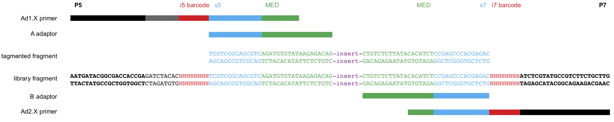
图 4. 带有接头序列的 CUT&Tag 插入片段文库。
我们的标准流程是，在单个 HiSeq 2500 流动槽上对最多 90 个混合样品进行单索引 25×25 双端 Illumina 测序，每个样品有唯一的 PCR 引物条形码。调整每个文库的量以提供约 500 万条双端读段，这对于使用特异且高产率抗体分析丰度较高的染色质特征而言，能提供高质量的结果。丰度较低的特征通常需要更少的读段，而质量较差的抗体可能需要更多读段才能生成稳健的染色质图谱。关于 CUT&Tag 特征召回率与测序深度的详细讨论已发表（Kaya-Okur et al 2020）。
##== linux command ==##
cores=8
ref="/path/to/bowtie2Index/hg38"
mkdir -p ${projPath}/alignment/sam/bowtie2_summary
mkdir -p ${projPath}/alignment/bam
mkdir -p ${projPath}/alignment/bed
mkdir -p ${projPath}/alignment/bedgraph
## 如需要，先构建 bowtie2 参考基因组索引：
## bowtie2-build path/to/hg38/fasta/hg38.fa /path/to/bowtie2Index/hg38
bowtie2 --end-to-end --very-sensitive --no-mixed --no-discordant --phred33 -I 10 -X 700 -p ${cores} -x ${ref} -1 ${projPath}/fastq/${histName}_R1.fastq.gz -2 ${projPath}/fastq/${histName}_R2.fastq.gz -S ${projPath}/alignment/sam/${histName}_bowtie2.sam &> ${projPath}/alignment/sam/bowtie2_summary/${histName}_bowtie2.txt双端读段由 Bowtie2 使用参数 --end-to-end --very-sensitive --no-mixed --no-discordant --phred33 -I 10 -X 700 进行比对，用于比对长度为 10–700 bp 的插入片段。
关键步骤：对于标准的 25×25 双端测序，无需修剪读段，因为插入片段 >25 bp 的读段中不会包含接头序列。但对于进行更长读长测序的用户，需要用 Cutadapt 修剪读段，并使用 --local --very-sensitive --no-mixed --no-discordant --phred33 -I 10 -X 700 进行比对，以在比对时忽略读段 3′ 端残留的任何接头序列。
本节为可选，但推荐（取决于你的实验方案）。
E. coli（大肠杆菌）DNA 会随细菌生产的 pA-Tn5 蛋白一起带入，并在反应过程中被非特异性地片段化。比对到 E. coli 基因组的读段占总读段的比例取决于表位靶向 CUT&Tag 的产率，因此取决于所用细胞数量以及该表位在染色质中的丰度。由于向 CUT&Tag 反应中加入的 pATn5 量是恒定的，并随之带入固定量的 E. coli DNA，因此 E. coli 读段可用于在一组实验中归一化表位丰度。更多讨论请见第 V 节。
##== linux command ==##
spikeInRef="/shared/ngs/illumina/henikoff/Bowtie2/Ecoli"
chromSize="/fh/fast/gottardo_r/yezheng_working/SupplementaryData/hg38/chromSize/hg38.chrom.size"
## bowtie2-build path/to/Ecoli/fasta/Ecoli.fa /path/to/bowtie2Index/Ecoli
bowtie2 --end-to-end --very-sensitive --no-mixed --no-discordant --phred33 -I 10 -X 700 -p ${cores} -x ${spikeInRef} -1 ${projPath}/fastq/${histName}_R1.fastq.gz -2 ${projPath}/fastq/${histName}_R2.fastq.gz -S $projPath/alignment/sam/${histName}_bowtie2_spikeIn.sam &> $projPath/alignment/sam/bowtie2_summary/${histName}_bowtie2_spikeIn.txt
seqDepthDouble=`samtools view -F 0x04 $projPath/alignment/sam/${histName}_bowtie2_spikeIn.sam | wc -l`
seqDepth=$((seqDepthDouble/2))
echo $seqDepth >$projPath/alignment/sam/bowtie2_summary/${histName}_bowtie2_spikeIn.seqDepth--no-overlap 和 --no-dovetail 两个参数（--end-to-end --very-sensitive --no-overlap --no-dovetail --no-mixed --no-discordant --phred33 -I 10 -X 700），以避免实验基因组与用于校准的残留 E. coli DNA 之间可能的交叉比对。更详细的参数说明请参阅 bowtie2 手册。
Bowtie2 比对结果摘要保存在 ${projPath}/alignment/sam/bowtie2_summary/${histName}_bowtie2.txt，预期结果类似如下：
2984630 reads; of these:
2984630 (100.00%) were paired; of these:
125110 (4.19%) aligned concordantly 0 times
2360430 (79.09%) aligned concordantly exactly 1 time
499090 (16.72%) aligned concordantly >1 times
95.81% overall alignment rate汇总原始读段和唯一比对的读段，以报告比对效率。高质量数据的比对率预期 >80%。CUT&Tag 数据通常背景非常低，因此即使只有 100 万条比对的片段，也足以对人类基因组中的一种组蛋白修饰给出稳健图谱。分析丰度较低的转录因子和染色质蛋白，下游分析可能需要 10 倍的比对片段数。
我们可以评估以下指标：
##=== R command ===##
## 项目路径和组蛋白列表
projPath = "/fh/fast/gottardo_r/yezheng_working/cuttag/CUTTag_tutorial"
sampleList = c("K27me3_rep1", "K27me3_rep2", "K4me3_rep1", "K4me3_rep2", "IgG_rep1", "IgG_rep2")
histList = c("K27me3", "K4me3", "IgG")
## 从 bowtie2 比对摘要文件收集比对结果
alignResult = c()
for(hist in sampleList){
alignRes = read.table(paste0(projPath, "/alignment/sam/bowtie2_summary/", hist, "_bowtie2.txt"), header = FALSE, fill = TRUE)
alignRate = substr(alignRes$V1[6], 1, nchar(as.character(alignRes$V1[6]))-1)
histInfo = strsplit(hist, "_")[[1]]
alignResult = data.frame(Histone = histInfo[1], Replicate = histInfo[2],
SequencingDepth = alignRes$V1[1] %>% as.character %>% as.numeric,
MappedFragNum_hg38 = alignRes$V1[4] %>% as.character %>% as.numeric + alignRes$V1[5] %>% as.character %>% as.numeric,
AlignmentRate_hg38 = alignRate %>% as.numeric) %>% rbind(alignResult, .)
}
alignResult$Histone = factor(alignResult$Histone, levels = histList)
alignResult %>% mutate(AlignmentRate_hg38 = paste0(AlignmentRate_hg38, "%"))##=== R command ===##
spikeAlign = c()
for(hist in sampleList){
spikeRes = read.table(paste0(projPath, "/alignment/sam/bowtie2_summary/", hist, "_bowtie2_spikeIn.txt"), header = FALSE, fill = TRUE)
alignRate = substr(spikeRes$V1[6], 1, nchar(as.character(spikeRes$V1[6]))-1)
histInfo = strsplit(hist, "_")[[1]]
spikeAlign = data.frame(Histone = histInfo[1], Replicate = histInfo[2],
SequencingDepth = spikeRes$V1[1] %>% as.character %>% as.numeric,
MappedFragNum_spikeIn = spikeRes$V1[4] %>% as.character %>% as.numeric + spikeRes$V1[5] %>% as.character %>% as.numeric,
AlignmentRate_spikeIn = alignRate %>% as.numeric) %>% rbind(spikeAlign, .)
}
spikeAlign$Histone = factor(spikeAlign$Histone, levels = histList)
spikeAlign %>% mutate(AlignmentRate_spikeIn = paste0(AlignmentRate_spikeIn, "%"))##=== R command ===##
alignSummary = left_join(alignResult, spikeAlign, by = c("Histone", "Replicate", "SequencingDepth")) %>%
mutate(AlignmentRate_hg38 = paste0(AlignmentRate_hg38, "%"),
AlignmentRate_spikeIn = paste0(AlignmentRate_spikeIn, "%"))
alignSummary##=== R command ===##
## 生成测序深度箱线图
fig3A = alignResult %>% ggplot(aes(x = Histone, y = SequencingDepth/1000000, fill = Histone)) +
geom_boxplot() +
geom_jitter(aes(color = Replicate), position = position_jitter(0.15)) +
scale_fill_viridis(discrete = TRUE, begin = 0.1, end = 0.9, option = "magma", alpha = 0.8) +
scale_color_viridis(discrete = TRUE, begin = 0.1, end = 0.9) +
theme_bw(base_size = 18) +
ylab("Sequencing Depth per Million") +
xlab("") +
ggtitle("A. Sequencing Depth")
fig3B = alignResult %>% ggplot(aes(x = Histone, y = MappedFragNum_hg38/1000000, fill = Histone)) +
geom_boxplot() +
geom_jitter(aes(color = Replicate), position = position_jitter(0.15)) +
scale_fill_viridis(discrete = TRUE, begin = 0.1, end = 0.9, option = "magma", alpha = 0.8) +
scale_color_viridis(discrete = TRUE, begin = 0.1, end = 0.9) +
theme_bw(base_size = 18) +
ylab("Mapped Fragments per Million") +
xlab("") +
ggtitle("B. Alignable Fragment (hg38)")
fig3C = alignResult %>% ggplot(aes(x = Histone, y = AlignmentRate_hg38, fill = Histone)) +
geom_boxplot() +
geom_jitter(aes(color = Replicate), position = position_jitter(0.15)) +
scale_fill_viridis(discrete = TRUE, begin = 0.1, end = 0.9, option = "magma", alpha = 0.8) +
scale_color_viridis(discrete = TRUE, begin = 0.1, end = 0.9) +
theme_bw(base_size = 18) +
ylab("% of Mapped Fragments") +
xlab("") +
ggtitle("C. Alignment Rate (hg38)")
fig3D = spikeAlign %>% ggplot(aes(x = Histone, y = AlignmentRate_spikeIn, fill = Histone)) +
geom_boxplot() +
geom_jitter(aes(color = Replicate), position = position_jitter(0.15)) +
scale_fill_viridis(discrete = TRUE, begin = 0.1, end = 0.9, option = "magma", alpha = 0.8) +
scale_color_viridis(discrete = TRUE, begin = 0.1, end = 0.9) +
theme_bw(base_size = 18) +
ylab("Spike-in Alignment Rate") +
xlab("") +
ggtitle("D. Alignment Rate (E.coli)")
ggarrange(fig3A, fig3B, fig3C, fig3D, ncol = 2, nrow=2, common.legend = TRUE, legend="bottom")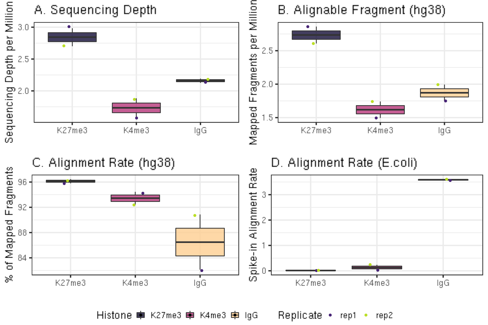
在典型的 CUT&Tag 实验中，以 65,000 个 K562 细胞中丰度较高的 H3K27me3 组蛋白修饰为目标时，E. coli 读段的比例约为 0.01% 到 10%。当细胞更少或表位丰度更低时，E. coli 读段可占总比对读段的多达 70%。对于 IgG 对照，E. coli 读段的比例通常远高于丰度较高的组蛋白修饰。
CUT&Tag 将接头整合到抗体锚定 pA-Tn5 附近的 DNA 中，而整合的确切位点受周围 DNA 可及性的影响。因此，起始和结束位置完全相同的片段预期会普遍存在，这类「重复」可能并非 PCR 扩增造成的重复。实践中我们发现，高质量 CUT&Tag 数据集的表观重复率很低，而且即使是表观「重复」的片段，也很可能是真实的片段。因此，我们不推荐去除重复。在材料量非常小、或怀疑存在 PCR 重复的实验中，可以去除重复。以下命令展示了如何使用 Picard 检查重复率。
##== linux command ==##
## 根据你加载 picard 的方式和服务器环境，picardCMD 可能不同，请相应调整。
picardCMD="java -jar picard.jar"
mkdir -p $projPath/alignment/removeDuplicate/picard_summary
## 按坐标排序
$picardCMD SortSam I=$projPath/alignment/sam/${histName}_bowtie2.sam O=$projPath/alignment/sam/${histName}_bowtie2.sorted.sam SORT_ORDER=coordinate
## 标记重复
$picardCMD MarkDuplicates I=$projPath/alignment/sam/${histName}_bowtie2.sorted.sam O=$projPath/alignment/removeDuplicate/${histName}_bowtie2.sorted.dupMarked.sam METRICS_FILE=$projPath/alignment/removeDuplicate/picard_summary/${histName}_picard.dupMark.txt
## 去除重复
$picardCMD MarkDuplicates I=$projPath/alignment/sam/${histName}_bowtie2.sorted.sam O=$projPath/alignment/removeDuplicate/${histName}_bowtie2.sorted.rmDup.sam REMOVE_DUPLICATES=true METRICS_FILE=$projPath/alignment/removeDuplicate/picard_summary/${histName}_picard.rmDup.txt我们汇总表观重复率，并计算去除重复后的唯一文库大小。
##=== R command ===##
## 从 picard 摘要输出汇总重复信息
dupResult = c()
for(hist in sampleList){
dupRes = read.table(paste0(projPath, "/alignment/removeDuplicate/picard_summary/", hist, "_picard.rmDup.txt"), header = TRUE, fill = TRUE)
histInfo = strsplit(hist, "_")[[1]]
dupResult = data.frame(Histone = histInfo[1], Replicate = histInfo[2], MappedFragNum_hg38 = dupRes$READ_PAIRS_EXAMINED[1] %>% as.character %>% as.numeric, DuplicationRate = dupRes$PERCENT_DUPLICATION[1] %>% as.character %>% as.numeric * 100, EstimatedLibrarySize = dupRes$ESTIMATED_LIBRARY_SIZE[1] %>% as.character %>% as.numeric) %>% mutate(UniqueFragNum = MappedFragNum_hg38 * (1-DuplicationRate/100)) %>% rbind(dupResult, .)
}
dupResult$Histone = factor(dupResult$Histone, levels = histList)
alignDupSummary = left_join(alignSummary, dupResult, by = c("Histone", "Replicate", "MappedFragNum_hg38")) %>% mutate(DuplicationRate = paste0(DuplicationRate, "%"))
alignDupSummary在这些示例数据集中，IgG 对照样品的重复率相对较高，因为该样品中的读段来自 CUT&Tag 反应中的非特异性片段化。因此，在下游分析之前，从 IgG 数据集中去除重复是合适的。
估计文库大小（estimated library size）是 Picard 基于双端重复计算的文库中唯一分子数的估计值。
估计文库大小与目标表位的丰度以及所用抗体的质量成正比，而 IgG 样品的估计文库大小预期非常低。
唯一片段数由 MappedFragNum_hg38 × (1 − DuplicationRate/100) 计算。
##=== R command ===##
## 生成重复率的箱线图
fig4A = dupResult %>% ggplot(aes(x = Histone, y = DuplicationRate, fill = Histone)) +
geom_boxplot() +
geom_jitter(aes(color = Replicate), position = position_jitter(0.15)) +
scale_fill_viridis(discrete = TRUE, begin = 0.1, end = 0.9, option = "magma", alpha = 0.8) +
scale_color_viridis(discrete = TRUE, begin = 0.1, end = 0.9) +
theme_bw(base_size = 18) +
ylab("Duplication Rate (*100%)") +
xlab("")
fig4B = dupResult %>% ggplot(aes(x = Histone, y = EstimatedLibrarySize, fill = Histone)) +
geom_boxplot() +
geom_jitter(aes(color = Replicate), position = position_jitter(0.15)) +
scale_fill_viridis(discrete = TRUE, begin = 0.1, end = 0.9, option = "magma", alpha = 0.8) +
scale_color_viridis(discrete = TRUE, begin = 0.1, end = 0.9) +
theme_bw(base_size = 18) +
ylab("Estimated Library Size") +
xlab("")
fig4C = dupResult %>% ggplot(aes(x = Histone, y = UniqueFragNum, fill = Histone)) +
geom_boxplot() +
geom_jitter(aes(color = Replicate), position = position_jitter(0.15)) +
scale_fill_viridis(discrete = TRUE, begin = 0.1, end = 0.9, option = "magma", alpha = 0.8) +
scale_color_viridis(discrete = TRUE, begin = 0.1, end = 0.9) +
theme_bw(base_size = 18) +
ylab("# of Unique Fragments") +
xlab("")
ggarrange(fig4A, fig4B, fig4C, ncol = 3, common.legend = TRUE, legend="bottom")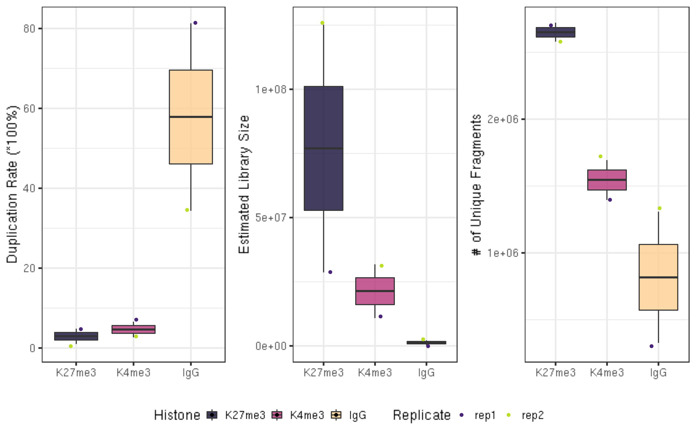
CUT&Tag 在锚定酶附近的染色质颗粒两侧整合接头，尽管染色质颗粒内部的片段化也可能发生。因此，以组蛋白修饰为目标的 CUT&Tag 反应主要产生核小体长度（约 180 bp）或其倍数的片段。以转录因子为目标的 CUT&Tag 主要产生核小体大小的片段，以及来自相邻核小体和因子结合位点的、数量不等的较短片段。核小体表面 DNA 的片段化也会发生，以单碱基分辨率绘制片段长度图会显示出 10-bp 的锯齿状周期性，这是 CUT&Tag 实验成功的典型特征。
##== linux command ==##
mkdir -p $projPath/alignment/sam/fragmentLen
## 从比对 sam 文件中提取第 9 列，即片段长度
samtools view -F 0x04 $projPath/alignment/sam/${histName}_bowtie2.sam | awk -F'\t' 'function abs(x){return ((x < 0.0) ? -x : x)} {print abs($9)}' | sort | uniq -c | awk -v OFS="\t" '{print $2, $1/2}' >$projPath/alignment/sam/fragmentLen/${histName}_fragmentLen.txt##=== R command ===##
## 收集片段大小信息
fragLen = c()
for(hist in sampleList){
histInfo = strsplit(hist, "_")[[1]]
fragLen = read.table(paste0(projPath, "/alignment/sam/fragmentLen/", hist, "_fragmentLen.txt"), header = FALSE) %>% mutate(fragLen = V1 %>% as.numeric, fragCount = V2 %>% as.numeric, Weight = as.numeric(V2)/sum(as.numeric(V2)), Histone = histInfo[1], Replicate = histInfo[2], sampleInfo = hist) %>% rbind(fragLen, .)
}
fragLen$sampleInfo = factor(fragLen$sampleInfo, levels = sampleList)
fragLen$Histone = factor(fragLen$Histone, levels = histList)
## 生成片段大小密度图（小提琴图）
fig5A = fragLen %>% ggplot(aes(x = sampleInfo, y = fragLen, weight = Weight, fill = Histone)) +
geom_violin(bw = 5) +
scale_y_continuous(breaks = seq(0, 800, 50)) +
scale_fill_viridis(discrete = TRUE, begin = 0.1, end = 0.9, option = "magma", alpha = 0.8) +
scale_color_viridis(discrete = TRUE, begin = 0.1, end = 0.9) +
theme_bw(base_size = 20) +
ggpubr::rotate_x_text(angle = 20) +
ylab("Fragment Length") +
xlab("")
fig5B = fragLen %>% ggplot(aes(x = fragLen, y = fragCount, color = Histone, group = sampleInfo, linetype = Replicate)) +
geom_line(size = 1) +
scale_color_viridis(discrete = TRUE, begin = 0.1, end = 0.9, option = "magma") +
theme_bw(base_size = 20) +
xlab("Fragment Length") +
ylab("Count") +
coord_cartesian(xlim = c(0, 500))
ggarrange(fig5A, fig5B, ncol = 2)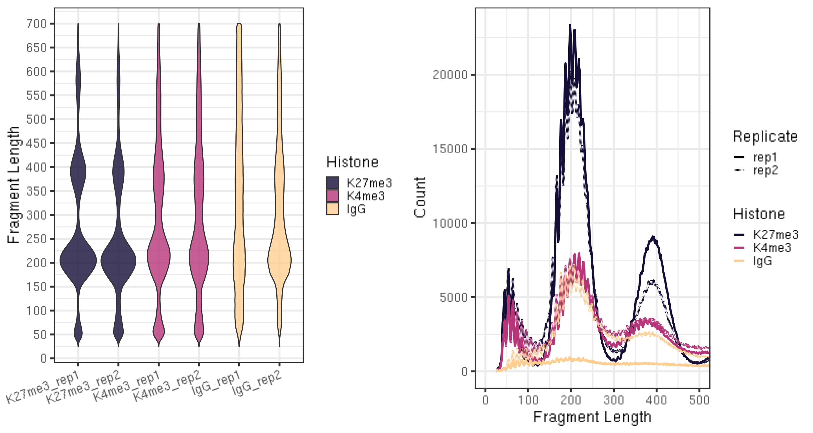
较小的片段（50–100 bp）可能是由于锚定的 Tn5 既可以在核小体表面、也可以在连接区（linker regions）进行片段化，因此这些小片段可能并非背景。
重复之间的数据可重复性通过全基因组比对读段计数的相关性分析来评估。为简化实现，我们将此分析推迟到第 IV 节之后，届时文件格式已转换为片段 bed 文件。
某些项目可能需要对比对质量分数进行更严格的过滤。这篇博客详细讨论了 bowtie 如何以实例分配质量分数。
MAPQ(x) = −10 × log₁₀(P(x 比对错误)) = −10 × log₁₀(p)
其取值范围为 0 到 37、40 或 42。
samtools view -q minQualityScore 将剔除所有低于用户定义 minQualityScore 的比对结果。
##== linux command ==##
minQualityScore=2
samtools view -q $minQualityScore ${projPath}/alignment/sam/${histName}_bowtie2.sam >${projPath}/alignment/sam/${histName}_bowtie2.qualityScore$minQualityScore.sam${histName}_bowtie2.sam 替换为过滤后的 sam 文件 ${histName}_bowtie2.qualityScore$minQualityScore.sam。本节是峰识别和可视化的必需准备步骤，其中需要进行一些过滤和文件格式转换。
##== linux command ==##
## 过滤并保留比对上的读段对
samtools view -bS -F 0x04 $projPath/alignment/sam/${histName}_bowtie2.sam >$projPath/alignment/bam/${histName}_bowtie2.mapped.bam
## 转换为 bed 文件格式
bedtools bamtobed -i $projPath/alignment/bam/${histName}_bowtie2.mapped.bam -bedpe >$projPath/alignment/bed/${histName}_bowtie2.bed
## 保留位于同一染色体且片段长度小于 1000 bp 的读段对
awk '$1==$4 && $6-$2 < 1000 {print $0}' $projPath/alignment/bed/${histName}_bowtie2.bed >$projPath/alignment/bed/${histName}_bowtie2.clean.bed
## 只提取与片段相关的列
cut -f 1,2,6 $projPath/alignment/bed/${histName}_bowtie2.clean.bed | sort -k1,1 -k2,2n -k3,3n >$projPath/alignment/bed/${histName}_bowtie2.fragments.bed为了研究重复之间以及不同条件之间的可重复性，将基因组划分为 500 bp 的区间（bin），并在重复数据集之间计算每个区间读段计数的 log2 变换值的 Pearson 相关系数。多个重复和 IgG 对照数据集以层次聚类的相关矩阵形式展示。
##== linux command ==##
## 使用每个片段的中点来推断该片段属于哪个 500bp 区间。
binLen=500
awk -v w=$binLen '{print $1, int(($2 + $3)/(2*w))*w + w/2}' $projPath/alignment/bed/${histName}_bowtie2.fragments.bed | sort -k1,1V -k2,2n | uniq -c | awk -v OFS="\t" '{print $2, $3, $1}' | sort -k1,1V -k2,2n >$projPath/alignment/bed/${histName}_bowtie2.fragmentsCount.bin$binLen.bed##== R command ==##
reprod = c()
fragCount = NULL
for(hist in sampleList){
if(is.null(fragCount)){
fragCount = read.table(paste0(projPath, "/alignment/bed/", hist, "_bowtie2.fragmentsCount.bin500.bed"), header = FALSE)
colnames(fragCount) = c("chrom", "bin", hist)
}else{
fragCountTmp = read.table(paste0(projPath, "/alignment/bed/", hist, "_bowtie2.fragmentsCount.bin500.bed"), header = FALSE)
colnames(fragCountTmp) = c("chrom", "bin", hist)
fragCount = full_join(fragCount, fragCountTmp, by = c("chrom", "bin"))
}
}
M = cor(fragCount %>% select(-c("chrom", "bin")) %>% log2(), use = "complete.obs")
corrplot(M, method = "color", outline = T, addgrid.col = "darkgray", order="hclust", addrect = 3, rect.col = "black", rect.lwd = 3,cl.pos = "b", tl.col = "indianred4", tl.cex = 1, cl.cex = 1, addCoef.col = "black", number.digits = 2, number.cex = 1, col = colorRampPalette(c("midnightblue","white","darkred"))(100))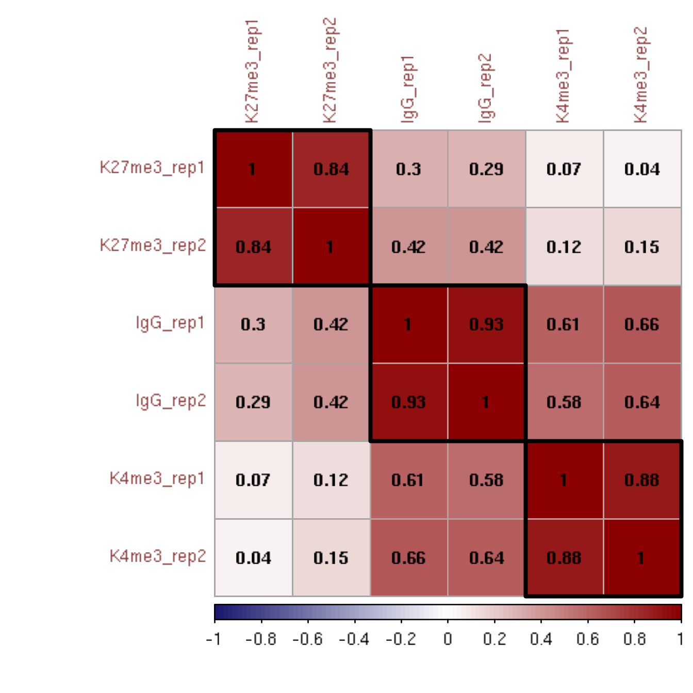
本节为可选，但推荐（取决于你的实验方案）。我们已在第 3.1.2 节展示了比对到 spike-in 基因组，在第 3.2.2 节展示了 spike-in 比对摘要。
其基本假设是：对于使用相同细胞数量的一系列样品，比对到主基因组与比对到 E. coli 基因组的片段比例是相同的。基于此假设，我们不在实验之间、或不同批次的纯化 pATn5 之间进行归一化（这些批次可能带有差异很大的残留 E. coli DNA）。为避免归一化数据中出现过小的分数，使用常数 C，定义缩放因子 S 为：
S = C /（比对到 E. coli 基因组的片段数）
归一化覆盖度计算为：
归一化覆盖度 =（主基因组覆盖度）× S
常数 C 是任意乘数，通常取 10,000。得到的文件作为基因组覆盖度 bedgraph 文件，相对较小。
##== linux command ==##
if [[ "$seqDepth" -gt "1" ]]; then
mkdir -p $projPath/alignment/bedgraph
scale_factor=`echo "10000 / $seqDepth" | bc -l`
echo "Scaling factor for $histName is: $scale_factor!"
bedtools genomecov -bg -scale $scale_factor -i $projPath/alignment/bed/${histName}_bowtie2.fragments.bed -g $chromSize > $projPath/alignment/bedgraph/${histName}_bowtie2.fragments.normalized.bedgraph
fi##=== R command ===##
scaleFactor = c()
multiplier = 10000
for(hist in sampleList){
spikeDepth = read.table(paste0(projPath, "/alignment/sam/bowtie2_summary/", hist, "_bowtie2_spikeIn.seqDepth"), header = FALSE, fill = TRUE)$V1[1]
histInfo = strsplit(hist, "_")[[1]]
scaleFactor = data.frame(scaleFactor = multiplier/spikeDepth, Histone = histInfo[1], Replicate = histInfo[2]) %>% rbind(scaleFactor, .)
}
scaleFactor$Histone = factor(scaleFactor$Histone, levels = histList)
left_join(alignDupSummary, scaleFactor, by = c("Histone", "Replicate"))##=== R command ===##
## 生成测序深度箱线图
fig6A = scaleFactor %>% ggplot(aes(x = Histone, y = scaleFactor, fill = Histone)) +
geom_boxplot() +
geom_jitter(aes(color = Replicate), position = position_jitter(0.15)) +
scale_fill_viridis(discrete = TRUE, begin = 0.1, end = 0.9, option = "magma", alpha = 0.8) +
scale_color_viridis(discrete = TRUE, begin = 0.1, end = 0.9) +
theme_bw(base_size = 20) +
ylab("Spike-in Scalling Factor") +
xlab("")
normDepth = inner_join(scaleFactor, alignResult, by = c("Histone", "Replicate")) %>% mutate(normDepth = MappedFragNum_hg38 * scaleFactor)
fig6B = normDepth %>% ggplot(aes(x = Histone, y = normDepth, fill = Histone)) +
geom_boxplot() +
geom_jitter(aes(color = Replicate), position = position_jitter(0.15)) +
scale_fill_viridis(discrete = TRUE, begin = 0.1, end = 0.9, option = "magma", alpha = 0.8) +
scale_color_viridis(discrete = TRUE, begin = 0.1, end = 0.9) +
theme_bw(base_size = 20) +
ylab("Normalization Fragment Count") +
xlab("") +
coord_cartesian(ylim = c(1000000, 130000000))
ggarrange(fig6A, fig6B, ncol = 2, common.legend = TRUE, legend="bottom")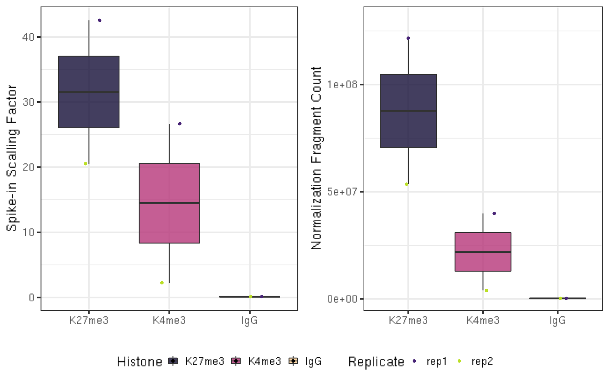
面向 CUT&RUN 的稀疏富集分析包 SEACR 专为在极低背景（即无读段覆盖的区域）的染色质分析数据中识别峰和富集区域而设计，这正是 CUT&Tag 染色质分析实验的典型特征。SEACR 要求以双端测序的 bedGraph 文件作为输入，并将峰定义为不与 IgG 对照数据集中划定的背景信号区块重叠的、连续碱基覆盖区块。SEACR 既能有效识别因子结合位点的窄峰，也能识别某些组蛋白修饰特有的宽结构域。该方法已发表于 Meers et al. 2019，用户手册见 github。由于我们已用 E. coli 读段计数归一化了片段计数，因此将 SEACR 的归一化选项设为「non」。否则推荐使用「norm」。
##== linux command ==##
seacr="/fh/fast/gottardo_r/yezheng_working/Software/SEACR/SEACR_1.3.sh"
histControl=$2
mkdir -p $projPath/peakCalling/SEACR
bash $seacr $projPath/alignment/bedgraph/${histName}_bowtie2.fragments.normalized.bedgraph \
$projPath/alignment/bedgraph/${histControl}_bowtie2.fragments.normalized.bedgraph \
non stringent $projPath/peakCalling/SEACR/${histName}_seacr_control.peaks
bash $seacr $projPath/alignment/bedgraph/${histName}_bowtie2.fragments.normalized.bedgraph 0.01 non stringent $projPath/peakCalling/SEACR/${histName}_seacr_top0.01.peaks##=== R command ===##
peakN = c()
peakWidth = c()
peakType = c("control", "top0.01")
for(hist in sampleList){
histInfo = strsplit(hist, "_")[[1]]
if(histInfo[1] != "IgG"){
for(type in peakType){
peakInfo = read.table(paste0(projPath, "/peakCalling/SEACR/", hist, "_seacr_", type, ".peaks.stringent.bed"), header = FALSE, fill = TRUE) %>% mutate(width = abs(V3-V2))
peakN = data.frame(peakN = nrow(peakInfo), peakType = type, Histone = histInfo[1], Replicate = histInfo[2]) %>% rbind(peakN, .)
peakWidth = data.frame(width = peakInfo$width, peakType = type, Histone = histInfo[1], Replicate = histInfo[2]) %>% rbind(peakWidth, .)
}
}
}
peakN %>% select(Histone, Replicate, peakType, peakN)比较各重复数据集的峰识别结果，以定义可重复的峰。每个区块中按总信号排名前 1% 的峰被选为高置信度位点。
##=== R command ===##
histL = c("K27me3", "K4me3")
repL = paste0("rep", 1:2)
peakType = c("control", "top0.01")
peakOverlap = c()
for(type in peakType){
for(hist in histL){
overlap.gr = GRanges()
for(rep in repL){
peakInfo = read.table(paste0(projPath, "/peakCalling/SEACR/", hist, "_", rep, "_seacr_", type, ".peaks.stringent.bed"), header = FALSE, fill = TRUE)
peakInfo.gr = GRanges(peakInfo$V1, IRanges(start = peakInfo$V2, end = peakInfo$V3), strand = "*")
if(length(overlap.gr) >0){
overlap.gr = overlap.gr[findOverlaps(overlap.gr, peakInfo.gr)@from]
}else{
overlap.gr = peakInfo.gr
}
}
peakOverlap = data.frame(peakReprod = length(overlap.gr), Histone = hist, peakType = type) %>% rbind(peakOverlap, .)
}
}
peakReprod = left_join(peakN, peakOverlap, by = c("Histone", "peakType")) %>% mutate(peakReprodRate = peakReprod/peakN * 100)
peakReprod %>% select(Histone, Replicate, peakType, peakN, peakReprodNum = peakReprod, peakReprodRate)可重复性按如下计算：
# rep1 和 rep2 重叠的峰数 / rep1 或 rep2 的峰数 × 100
因此，它对每个重复中识别的峰总数很敏感。
我们计算峰内读段比例（FRiP）作为信噪比的度量，并与 IgG 对照数据集中的 FRiP 进行对比以作说明。尽管 CUT&Tag 的测序深度通常只有 100–500 万读段，但该方法低背景的特点带来了较高的 FRiP 分数。
##=== R command ===##
library(chromVAR)
bamDir = paste0(projPath, "/alignment/bam")
inPeakData = c()
## 与 bam 文件重叠以获取计数
for(hist in histL){
for(rep in repL){
peakRes = read.table(paste0(projPath, "/peakCalling/SEACR/", hist, "_", rep, "_seacr_control.peaks.stringent.bed"), header = FALSE, fill = TRUE)
peak.gr = GRanges(seqnames = peakRes$V1, IRanges(start = peakRes$V2, end = peakRes$V3), strand = "*")
bamFile = paste0(bamDir, "/", hist, "_", rep, "_bowtie2.mapped.bam")
fragment_counts <- getCounts(bamFile, peak.gr, paired = TRUE, by_rg = FALSE, format = "bam")
inPeakN = counts(fragment_counts)[,1] %>% sum
inPeakData = rbind(inPeakData, data.frame(inPeakN = inPeakN, Histone = hist, Replicate = rep))
}
}
frip = left_join(inPeakData, alignResult, by = c("Histone", "Replicate")) %>% mutate(frip = inPeakN/MappedFragNum_hg38 * 100)
frip %>% select(Histone, Replicate, SequencingDepth, MappedFragNum_hg38, AlignmentRate_hg38, FragInPeakNum = inPeakN, FRiPs = frip)fig7A = peakN %>% ggplot(aes(x = Histone, y = peakN, fill = Histone)) +
geom_boxplot() +
geom_jitter(aes(color = Replicate), position = position_jitter(0.15)) +
facet_grid(~peakType) +
scale_fill_viridis(discrete = TRUE, begin = 0.1, end = 0.55, option = "magma", alpha = 0.8) +
scale_color_viridis(discrete = TRUE, begin = 0.1, end = 0.9) +
theme_bw(base_size = 18) +
ylab("Number of Peaks") +
xlab("")
fig7B = peakWidth %>% ggplot(aes(x = Histone, y = width, fill = Histone)) +
geom_violin() +
facet_grid(Replicate~peakType) +
scale_fill_viridis(discrete = TRUE, begin = 0.1, end = 0.55, option = "magma", alpha = 0.8) +
scale_color_viridis(discrete = TRUE, begin = 0.1, end = 0.9) +
scale_y_continuous(trans = "log", breaks = c(400, 3000, 22000)) +
theme_bw(base_size = 18) +
ylab("Width of Peaks") +
xlab("")
fig7C = peakReprod %>% ggplot(aes(x = Histone, y = peakReprodRate, fill = Histone, label = round(peakReprodRate, 2))) +
geom_bar(stat = "identity") +
geom_text(vjust = 0.1) +
facet_grid(Replicate~peakType) +
scale_fill_viridis(discrete = TRUE, begin = 0.1, end = 0.55, option = "magma", alpha = 0.8) +
scale_color_viridis(discrete = TRUE, begin = 0.1, end = 0.9) +
theme_bw(base_size = 18) +
ylab("% of Peaks Reproduced") +
xlab("")
fig7D = frip %>% ggplot(aes(x = Histone, y = frip, fill = Histone, label = round(frip, 2))) +
geom_boxplot() +
geom_jitter(aes(color = Replicate), position = position_jitter(0.15)) +
scale_fill_viridis(discrete = TRUE, begin = 0.1, end = 0.55, option = "magma", alpha = 0.8) +
scale_color_viridis(discrete = TRUE, begin = 0.1, end = 0.9) +
theme_bw(base_size = 18) +
ylab("% of Fragments in Peaks") +
xlab("")
ggarrange(fig7A, fig7B, fig7C, fig7D, ncol = 2, nrow=2, common.legend = TRUE, legend="bottom")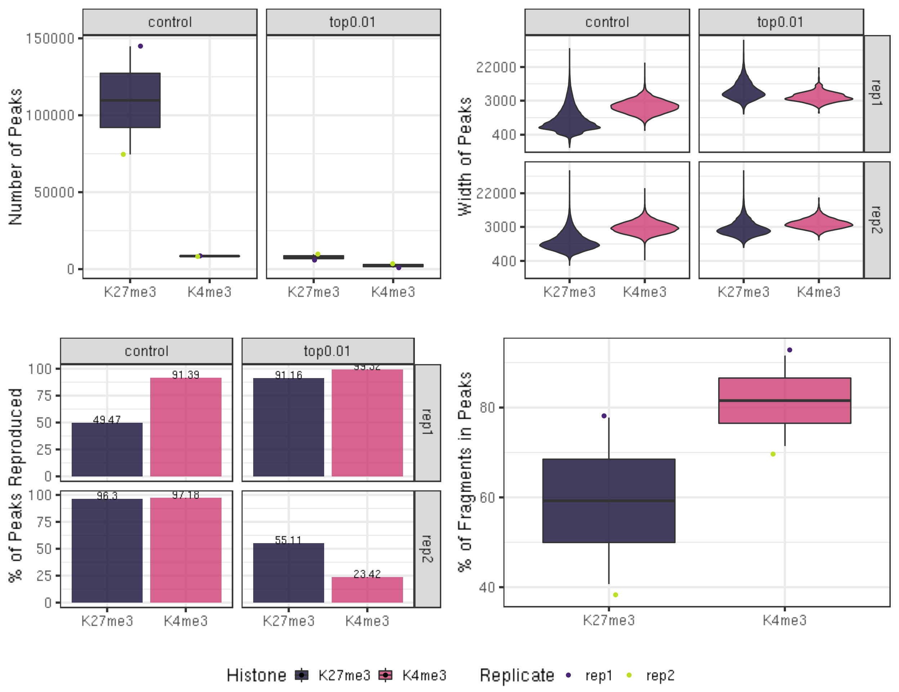
通常我们希望用基因组浏览器来可视化某个区域的染色质景观。Integrative Genomic Viewer (IGV) 提供易于使用的网页版和本地桌面版。UCSC Genome Browser 提供最全面的补充基因组信息。
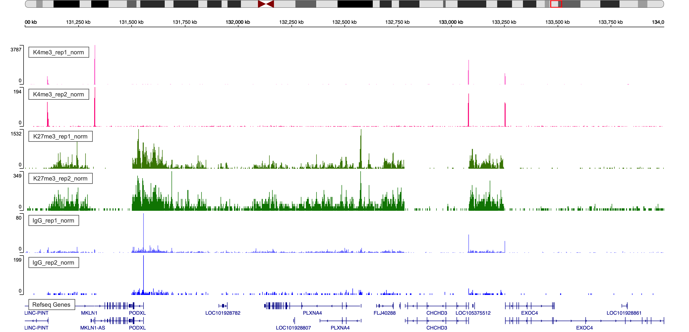
图 5. chr7:131,000,000–134,000,000 区域的 IGV Web 可视化。
我们还希望查看一组注释位点处的染色质特征，例如基因启动子处的组蛋白修饰信号。我们将使用 deepTools 的 computeMatrix 和 plotHeatmap 函数来生成热图。
##== linux command ==##
mkdir -p $projPath/alignment/bigwig
samtools sort -o $projPath/alignment/bam/${histName}.sorted.bam $projPath/alignment/bam/${histName}_bowtie2.mapped.bam
samtools index $projPath/alignment/bam/${histName}.sorted.bam
bamCoverage -b $projPath/alignment/bam/${histName}.sorted.bam -o $projPath/alignment/bigwig/${histName}_raw.bw ##== linux command ==##
cores=8
computeMatrix scale-regions -S $projPath/alignment/bigwig/K27me3_rep1_raw.bw \
$projPath/alignment/bigwig/K27me3_rep2_raw.bw \
$projPath/alignment/bigwig/K4me3_rep1_raw.bw \
$projPath/alignment/bigwig/K4me3_rep2_raw.bw \
-R $projPath/data/hg38_gene/hg38_gene.tsv \
--beforeRegionStartLength 3000 \
--regionBodyLength 5000 \
--afterRegionStartLength 3000 \
--skipZeros -o $projPath/data/hg38_gene/matrix_gene.mat.gz -p $cores
plotHeatmap -m $projPath/data/hg38_gene/matrix_gene.mat.gz -out $projPath/data/hg38_gene/Histone_gene.png --sortUsing sum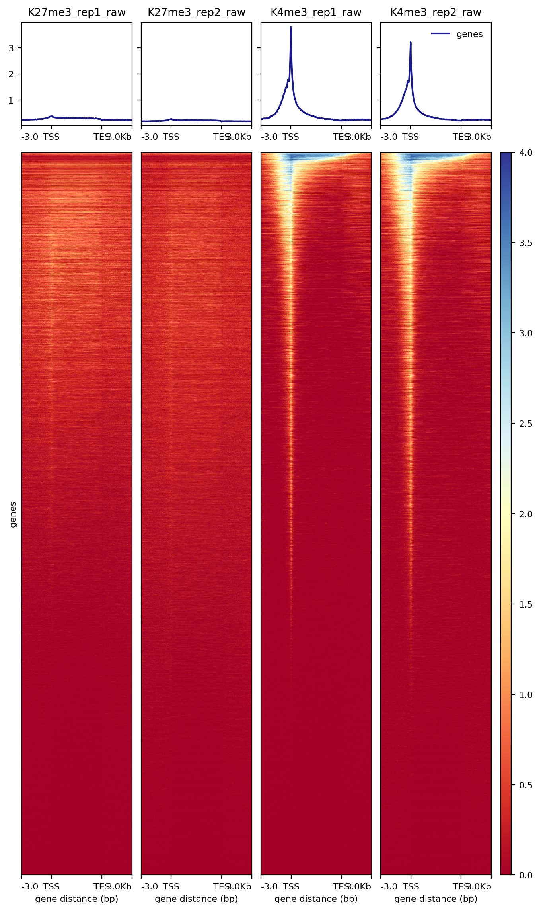
图 6. 基因周围组蛋白富集的热图。
我们使用 SEACR 返回的信号区块中点来在热图中对齐信号。SEACR 输出的第六列是形如 chr:start-end 的条目，表示该区域中信号最大的区域的起始和结束碱基。我们先生成一个在第 6 列包含此中点信息的新 bed 文件，再用 deeptools 进行热图可视化。
##== linux command ==##
awk '{split($6, summit, ":"); split(summit[2], region, "-"); print summit[1]"\t"region[1]"\t"region[2]}' $projPath/peakCalling/SEACR/${histName}_${repName}_seacr_control.peaks.stringent.bed >$projPath/peakCalling/SEACR/${histName}_${repName}_seacr_control.peaks.summitRegion.bed
computeMatrix reference-point -S $projPath/alignment/bigwig/${histName}_${repName}_raw.bw \
-R $projPath/peakCalling/SEACR/${histName}_${repName}_seacr_control.peaks.summitRegion.bed \
--skipZeros -o $projPath/peakCalling/SEACR/${histName}_${repName}_SEACR.mat.gz -p $cores -a 3000 -b 3000 --referencePoint center
plotHeatmap -m $projPath/peakCalling/SEACR/${histName}_SEACR.mat.gz -out $projPath/peakCalling/SEACR/${histName}_SEACR_heatmap.png --sortUsing sum --startLabel "Peak Start" --endLabel "Peak End" --xAxisLabel "" --regionsLabel "Peaks" --samplesLabel "${histName} ${repName}"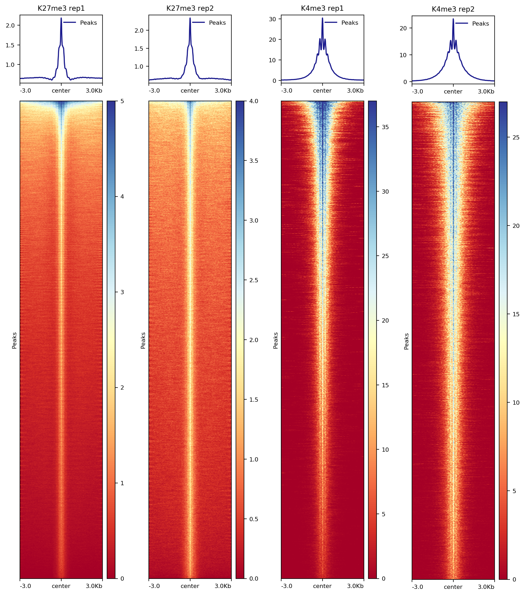
图 7. 峰内组蛋白富集的热图。
DESeq2：用 DESeq2 对 RNA-seq 数据进行折叠变化和离散度的调节估计
估计高通量测序分析得到的计数数据中方差-均值的依赖关系，并基于负二项分布模型检验差异表达。
通常，差异检验比较同一组蛋白修饰的两个或多个条件。本教程受示例数据所限，我们将通过比较 H3K27me3 的两个重复和 H3K4me3 的两个重复来说明差异检测。我们将使用 DESeq2（完整教程）作为示例。
##=== R command ===##
mPeak = GRanges()
## 与 bam 文件重叠以获取计数
for(hist in histL){
for(rep in repL){
peakRes = read.table(paste0(projPath, "/peakCalling/SEACR/", hist, "_", rep, "_seacr_control.peaks.stringent.bed"), header = FALSE, fill = TRUE)
mPeak = GRanges(seqnames = peakRes$V1, IRanges(start = peakRes$V2, end = peakRes$V3), strand = "*") %>% append(mPeak, .)
}
}
masterPeak = reduce(mPeak)##=== R command ===##
library(DESeq2)
bamDir = paste0(projPath, "/alignment/bam")
countMat = matrix(NA, length(masterPeak), length(histL)*length(repL))
## 与 bam 文件重叠以获取计数
i = 1
for(hist in histL){
for(rep in repL){
bamFile = paste0(bamDir, "/", hist, "_", rep, "_bowtie2.mapped.bam")
fragment_counts <- getCounts(bamFile, masterPeak, paired = TRUE, by_rg = FALSE, format = "bam")
countMat[, i] = counts(fragment_counts)[,1]
i = i + 1
}
}
colnames(countMat) = paste(rep(histL, 2), rep(repL, each = 2), sep = "_")##=== R command ===##
selectR = which(rowSums(countMat) > 5) ## 去除低计数基因
dataS = countMat[selectR,]
condition = factor(rep(histL, each = length(repL)))
dds = DESeqDataSetFromMatrix(countData = dataS,
colData = DataFrame(condition),
design = ~ condition)
DDS = DESeq(dds)
normDDS = counts(DDS, normalized = TRUE) ## 相对于测序深度归一化
colnames(normDDS) = paste0(colnames(normDDS), "_norm")
res = results(DDS, independentFiltering = FALSE, altHypothesis = "greaterAbs")
countMatDiff = cbind(dataS, normDDS, res)
head(countMatDiff)DataFrame with 6 rows and 14 columns
K27me3_rep1 K4me3_rep1 K27me3_rep2 K4me3_rep2 K27me3_rep1_norm
<numeric> <numeric> <numeric> <numeric> <numeric>
1 6 2 1 6 1.408657
2 1 0 242 182 0.234776
3 0 0 176 88 0.000000
4 0 0 274 194 0.000000
5 3 4 0 1 0.704328
6 0 1 109 59 0.000000
K4me3_rep1_norm K27me3_rep2_norm K4me3_rep2_norm baseMean log2FoldChange
<numeric> <numeric> <numeric> <numeric> <numeric>
1 0.620403 4.170 18.2724 6.11787 3.496854
2 0.000000 1009.141 554.2634 390.90978 12.510325
3 0.000000 733.921 267.9955 250.47905 13.297304
4 0.000000 1142.581 590.8082 433.34733 14.089840
5 1.240806 0.000 3.0454 1.24763 0.846266
6 0.310202 454.530 179.6788 158.62986 11.189689
lfcSE stat pvalue padj
<numeric> <numeric> <numeric> <numeric>
1 1.19893 2.916635 3.53829e-03 4.22134e-02
2 1.50039 8.338074 7.55102e-17 2.18197e-15
3 1.58547 8.386969 4.98837e-17 1.50548e-15
4 1.55196 9.078730 1.09850e-19 6.73560e-18
5 2.18326 0.387617 6.98300e-01 9.72755e-01
6 1.53046 7.311313 2.64545e-13 4.33546e-12DESeq2 要求输入矩阵应为未归一化的计数或测序读段的估计计数。
DESeq2 模型在内部校正文库大小。
countMatDiff 汇总了差异分析结果：
Kaya-Okur HS, Wu SJ, Codomo CA, Pledger ES, Bryson TD, Henikoff JG, Ahmad K, Henikoff S: CUT&Tag for efficient epigenomic profiling of small samples and single cells. Nature Communications 2019 10:1930 (PMID:31036827).
Meers, M.P., Tenenbaum, D. & Henikoff, S. Peak calling by Sparse Enrichment Analysis for CUT&RUN chromatin profiling. Epigenetics & Chromatin 12, 42 (2019). https://doi.org/10.1186/s13072-019-0287-4
引用本教程：Zheng Y et al (2020). Protocol.io
ChIPseqSpikeInFree 是一种新颖的 ChIP-seq 归一化方法，无需依赖外源 spike-in 染色质或峰检测，即可有效确定跨各种条件和处理的样品的缩放因子，从而揭示组蛋白修饰占位的全局变化。安装详情见其 github。
MACS2：基于模型的 ChIP-Seq 分析（MACS）。安装详情见此处。
##== linux command ==##
histName="K27me3"
controlName="IgG"
mkdir -p $projPath/peakCalling
macs2 callpeak -t ${projPath}/alignment/bam/${histName}_rep1_bowtie2.mapped.bam \
-c ${projPath}/alignment/bam/${controlName}_rep1_bowtie2.mapped.bam \
-g hs -f BAMPE -n macs2_peak_q0.1 --outdir $projPath/peakCalling/MACS2 -q 0.1 --keep-dup all 2>${projPath}/peakCalling/MACS2/macs2Peak_summary.txtdPeak：高分辨率识别 PET 和 SET ChIP-Seq 数据中的转录因子结合位点。
MOSAiCS：用于 ChIP-Seq 数据分析的统计框架。
Limma：limma 为 RNA-seq 和微阵列研究提供差异表达分析能力。Limma 是用于分析基因表达微阵列数据的 R 包，尤其使用线性模型分析设计实验并评估差异表达。Limma 能够在任意复杂的实验设计中同时分析多个 RNA 靶标之间的比较。经验贝叶斯方法即使在阵列数量很少时也能提供稳定结果。Limma 可扩展到研究峰区域内的差异片段富集分析。值得注意的是，limma 既能处理固定效应模型，也能处理随机效应模型。
edgeR：考虑生物学变异的多因素 RNA-seq 实验差异表达分析。edgeR 对有生物学重复的 RNA-seq 表达谱进行差异表达分析，实现了一系列基于负二项分布的统计方法，包括经验贝叶斯估计、精确检验、广义线性模型和拟似然检验。除 RNA-seq 外，它还可应用于其他产生读段计数的基因组数据的差异信号分析，包括 ChIP-seq、ATAC-seq、Bisulfite-seq、SAGE 和 CAGE。edgeR 可以处理多因素问题。
此工作流可以用于你自己的数据，并会生成一套标准化的质量控制报告。然而，许多测序机构并不执行 25×25 双端测序，这里提供了修剪和比对的替代参数。针对你的材料进行的非特异性抗体（IgG）分析或 ATAC-seq 分析的对照数据集，也可用于此处详述的可选分析。
用 300 mM NaCl 严格洗涤对于限制 Tn5 对暴露 DNA 的亲和力至关重要。我们在此描述了控制背景 Tn5 亲和力的必要性，以及我们的 CUT&Tag 方案如何有效抑制这种假象，从而实现对染色质表位的清晰定位。我们介绍了一种可处理天然或固定细胞核的方案，并包含 DNA 分离的替代方法。为说明该方法，我们描述了一个典型实验，包括使用新的峰识别信息指标来评估结果。此外，我们验证了 CUT&Tag 的单管形式，该形式无需 DNA 分离，而是直接用片段化材料进行文库扩增。我们根据自身经验记录了 CUT&Tag 方案的关键步骤，以帮助用户在自己的研究中建立该方法。
sessionInfo()
R version 4.0.2 (2020-06-22)
Platform: x86_64-pc-linux-gnu (64-bit)
Running under: Ubuntu 18.04.5 LTS
Matrix products: default
BLAS/LAPACK: /app/software/OpenBLAS/0.3.7-GCC-8.3.0/lib/libopenblas_haswellp-r0.3.7.so
locale:
[1] LC_CTYPE=en_US.UTF-8 LC_NUMERIC=C
[3] LC_TIME=en_US.UTF-8 LC_COLLATE=en_US.UTF-8
[5] LC_MONETARY=en_US.UTF-8 LC_MESSAGES=en_US.UTF-8
[7] LC_PAPER=en_US.UTF-8 LC_NAME=C
[9] LC_ADDRESS=C LC_TELEPHONE=C
[11] LC_MEASUREMENT=en_US.UTF-8 LC_IDENTIFICATION=C
attached base packages:
[1] parallel stats4 stats graphics grDevices utils datasets
[8] methods base
other attached packages:
[1] corrplot_0.84 ggpubr_0.4.0
[3] DESeq2_1.28.1 SummarizedExperiment_1.18.2
[5] DelayedArray_0.14.1 matrixStats_0.57.0
[7] Biobase_2.48.0 chromVAR_1.10.0
[9] GenomicRanges_1.40.0 GenomeInfoDb_1.24.2
[11] IRanges_2.22.2 S4Vectors_0.26.1
[13] BiocGenerics_0.34.0 viridis_0.5.1
[15] viridisLite_0.3.0 ggplot2_3.3.2
[17] stringr_1.4.0 dplyr_1.0.2
[19] workflowr_1.6.2
loaded via a namespace (and not attached):
[1] colorspace_1.4-1 ggsignif_0.6.0
[3] rio_0.5.16 ellipsis_0.3.1
[5] rprojroot_2.0.2 XVector_0.28.0
[7] fs_1.4.2 rstudioapi_0.11
[9] farver_2.0.3 DT_0.16
[11] bit64_4.0.5 AnnotationDbi_1.50.3
[13] splines_4.0.2 R.methodsS3_1.8.0
[15] geneplotter_1.66.0 knitr_1.29
[17] jsonlite_1.7.2 Cairo_1.5-12
[19] Rsamtools_2.4.0 seqLogo_1.54.3
[21] broom_0.5.6 annotate_1.66.0
[23] GO.db_3.11.4 png_0.1-7
[25] R.oo_1.23.0 shiny_1.5.0
[27] readr_1.3.1 compiler_4.0.2
[29] httr_1.4.2 backports_1.2.1
[31] Matrix_1.2-18 fastmap_1.0.1
[33] lazyeval_0.2.2 later_1.1.0.1
[35] htmltools_0.5.0 tools_4.0.2
[37] gtable_0.3.0 glue_1.4.2
[39] TFMPvalue_0.0.8 GenomeInfoDbData_1.2.3
[41] reshape2_1.4.4 Rcpp_1.0.5
[43] carData_3.0-4 cellranger_1.1.0
[45] vctrs_0.3.5 Biostrings_2.56.0
[47] nlme_3.1-148 rtracklayer_1.48.0
[49] xfun_0.15 CNEr_1.24.0
[51] openxlsx_4.1.5 mime_0.9
[53] miniUI_0.1.1.1 lifecycle_0.2.0
[55] poweRlaw_0.70.6 gtools_3.8.2
[57] rstatix_0.6.0 XML_3.99-0.5
[59] zlibbioc_1.34.0 scales_1.1.1
[61] BSgenome_1.56.0 hms_0.5.3
[63] promises_1.1.1 RColorBrewer_1.1-2
[65] curl_4.3 yaml_2.2.1
[67] memoise_1.1.0 gridExtra_2.3
[69] stringi_1.5.3 RSQLite_2.2.0
[71] highr_0.8 genefilter_1.70.0
[73] caTools_1.18.0 zip_2.0.4
[75] BiocParallel_1.22.0 rlang_0.4.9
[77] pkgconfig_2.0.3 bitops_1.0-6
[79] pracma_2.2.9 evaluate_0.14
[81] lattice_0.20-41 purrr_0.3.4
[83] labeling_0.4.2 GenomicAlignments_1.24.0
[85] htmlwidgets_1.5.3 cowplot_1.1.0
[87] bit_4.0.4 tidyselect_1.1.0
[89] plyr_1.8.6 magrittr_1.5
[91] R6_2.5.0 generics_0.0.2
[93] DBI_1.1.0 haven_2.3.1
[95] foreign_0.8-80 pillar_1.4.7
[97] whisker_0.4 withr_2.3.0
[99] abind_1.4-5 survival_3.2-3
[101] KEGGREST_1.28.0 RCurl_1.98-1.2
[103] tibble_3.0.4 car_3.0-8
[105] crayon_1.3.4 plotly_4.9.2.1
[107] rmarkdown_2.3 TFBSTools_1.26.0
[109] readxl_1.3.1 locfit_1.5-9.4
[111] grid_4.0.2 data.table_1.13.4
[113] blob_1.2.1 git2r_0.27.1
[115] forcats_0.5.0 digest_0.6.27
[117] xtable_1.8-4 tidyr_1.1.2
[119] httpuv_1.5.4 R.utils_2.9.2
[121] munsell_0.5.0 DirichletMultinomial_1.30.0